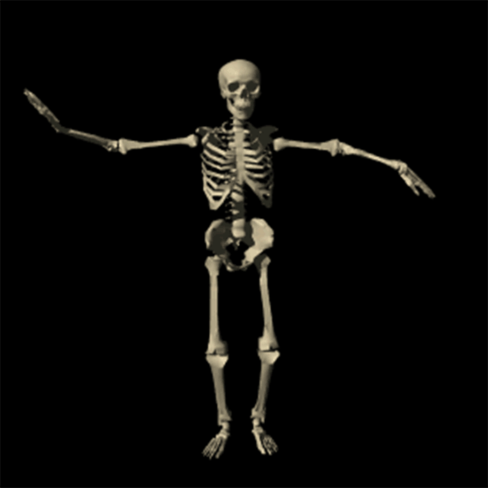
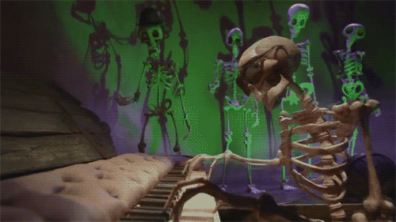

Welcome to my Website!
spoooo
ooo
oooky  spoop

This webpage features the song "A Soul as Red as a Ground Cherry" by ZUN, from
the game Touhou 6: the Embodiment of Scarlet Devil.
Please support the artist if you enjoy the song.